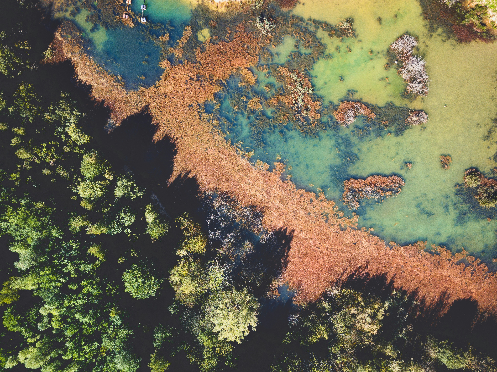
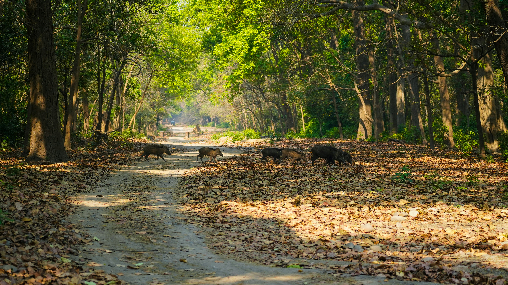
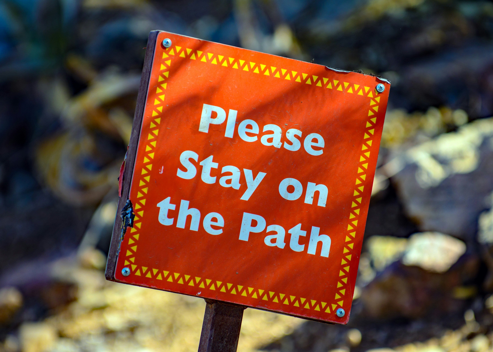

Écosystème

Qu'est-ce qu'un écosystème ?
un écosystème désigne un ensemble d’organismes vivants (plantes, animaux, micro-organismes) qui intéragissent avec leur environnement physique (sol, eau, air) et entre eux.
Ces interactions créent un réseau complexe et dynamique où chaque élément influence les autres. Par exemple, un étang accueille des poissons, des plantes aquatiques, des insectes, et des microorganismes, qui dépendent de la qualité de l’eau et du cycle des nutriments. L'ensemble des écosystèmes abritent les êtres vivants animaux ou végétaux (la biodiversité) et constituent ce que l'on appelle "les espaces naturels" ou "la nature". - Citation de Novethic.fr

La forêt
La forêt est bien plus qu'une simple étendue d'arbres, c'est un écosystème complexe et d'une grande fragilité, essentiel à notre planète. Véritable poumon vert, elle filtre notre air et abrite une biodiversité inestimable. Lors de vos promenades, rappelez-vous que vous pénétrez dans un sanctuaire vivant où chaque racine et chaque insecte participent à un équilibre naturel.
Pour protéger ce milieu, restez impérativement sur les sentiers balisés. Cela permet d'éviter le piétinement des jeunes pousses et l'érosion des sols. En respectant son calme et son intégrité, vous permettez à la forêt de continuer à prospérer. (1)

Les animaux de la forêt
Dans la forêt, les animaux sont chez eux, nous n'y sommes que des invités de passage. Des grands cervidés aux plus petits amphibiens, chaque espèce joue un rôle vital dans ce formidable habitat.
Leur survie et leur bien-être dépendent directement de leur tranquillité.
Lorsque vous vous y promenez, faites preuve de la plus grande discrétion. Évitez les cris, la musique ou de laisser vos animaux de compagnie divaguer, car cela provoque un stress immense et une fuite épuisante pour la faune. Le meilleur moyen de les admirer est de les observer de loin, en silence. (1)

Les règles à suivre
Pour garantir la sécurité de l'écosystème, des règles strictes s'imposent. La plus cruciale : ne nourrissez jamais les animaux sauvages et n'interagissez pas avec eux.
Leur donner de la nourriture humaine altère leur instinct, les rend dangereusement dépendants de l'homme, et peut gravement nuire à leur digestion.
Gardez vos distances, même face à un animal qui semble docile ou curieux. De plus, ne laissez aucune trace : remportez absolument tous vos déchets, même ceux que vous pensez biodégradables. Enfin, respectez l'interdiction stricte de faire du feu.
Adopter ces gestes de bon sens, c'est agir en véritable protecteur de la nature. (1)